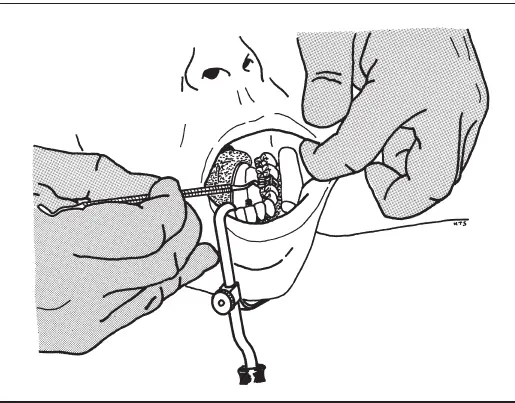

نسخه استخراجشده؛ ترجمه یا تأیید علمی انجام نشده است. وضعیت: captured
اینلهی مولر اول بالا را زیر رابردم لاتکس تراش دادهای و دانشجو همانجا، زیر ورق، با پلیوینیل سیلوکسان (PVS) قالب میگیرد. قالب که بیرون میآید، سطحش کنار ورق چسبناک مانده و جزئیات مارجین پیدا نیست. کجای کار خراب بود؟
در تراش، حجم زیادی آب از اسپری توربین میآید و باید زبان را هم دور نگه داری. در قالبگیری و سمان کردن حجم مایع خیلی کمتر است، ولی خشکی بسیار بیشتری لازم است. مواد قالبگیری الاستومری رایج، جز پلیاتر، آبگریزند و هر رطوبتی در قالب حفره میسازد. خونریزی را هم باید مهار کنی.
برای ترمیمهای غیرمستقیم هنوز کارآزمایی بالینیای نیست که رابردم را با روشهای دیگر ایزولاسیون مقایسه کند.
اشتباه رایج: قالب PVS زیر ورق لاتکس. اگر قالب را زیر رابردم میگیری، مادهی الاستومری دیگری برگزین؛ اگر PVS میخواهی، ورق را بردار و میدان را با نخ رترکشن، رول پنبه و ساکشن خشک نگه دار.
